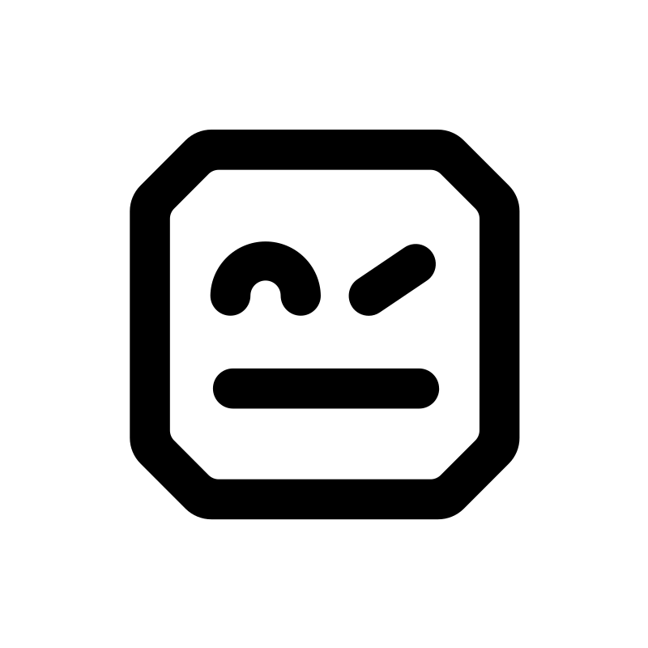
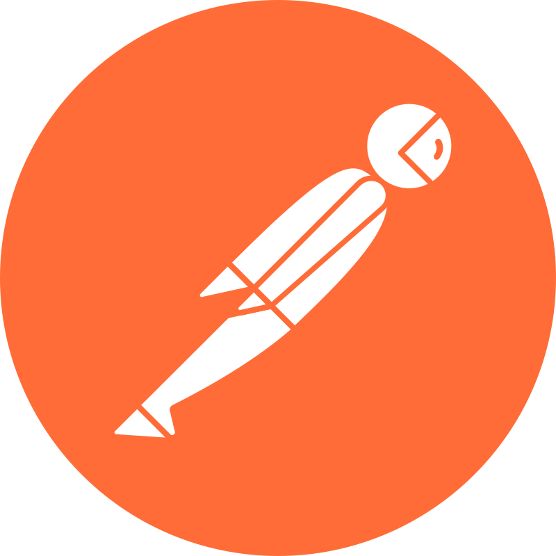
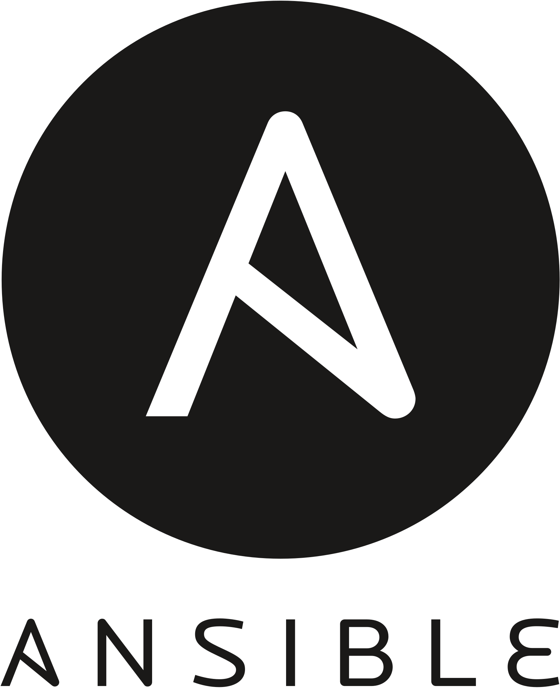

My Tech Stack








As a seasoned Software Engineer , I specialize in providing Software Architect solutions, overseeing Software Quality Assurance with a focus on automation, and implementing DevOps practices. I excel in crafting robust, scalable software architectures to lay the foundation for successful projects. Furthermore, I am dedicated to ensuring software quality, leveraging automated testing methodologies to maintain impeccable standards. In the realm of DevOps, I bridge the gap between development and operations by implementing efficient CI/CD pipelines and automating deployment processes. My collaborative spirit and proficiency enable me to drive the end-to-end success of software projects, from inception to delivery.


